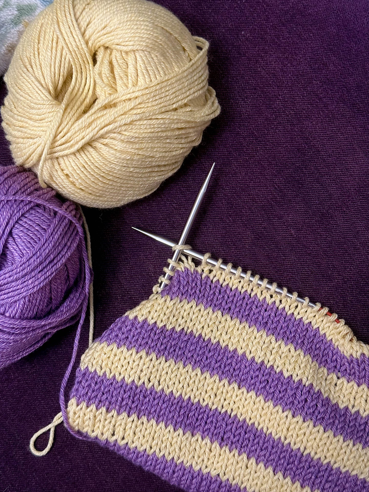

purl girl club
knitter, ravelry addict, and dpn enthusiast
click here to see my knitting insta profile!
row counter
0
to do list for this website
add dpn table to tools pageadd addi flexiflip table to tools page
make a gallery of finished objects with captions
make a favicon for the site
highlight the current page in the nav bar
make a yarn weight reference chart
make row counter remember after refresh
make a knitting abbreviations page
make a my favorite yarns page
make row counter buttons work
make a custom 404 error page (oops you dropped your stitch!)
make a form to add a wip to the wips page directly from the website
move finished wips to the finished objects page with a click
make a form to add a yarn to the yarns page
make a queue that can be adjusted with drag and drop
project cards on the wip page instead of plain text
a back to the top link at the bottom of each page
a knitting timeline to see what im making over time
a photo slideshow on finished objects page
add photo gallery to home page
